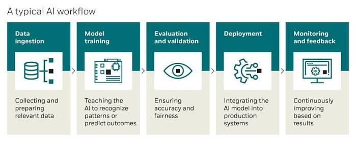
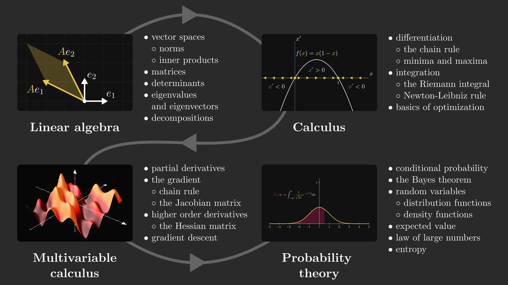

Artificial Intelligence Explanation for High School Students
Artificial Intelligence, or AI, is one of the most revolutionary technologies of our time. You can find AI on phones, social networks, search engines, video games, recommendations systems, cars and in other places.
But what exactly is AI? How does it work? How is it related to programming, mathematics, machine learning and deep learning?
We will discuss AI through concepts understandable by high school student in this blog post.
1. What is Artificial Intelligence?
Artificial Intelligence (AI) is a branch of computer science which deals with development of computer systems able to perform tasks requiring human intelligence.
Such tasks can include:
- Image recognition
- Natural language processing
- Prediction
- Problem solving
- Speech recognition
- Recommendations
- Text, images and music generation
- Decision making based on data
When YouTube suggests a video that you might like, AI algorithm analyzes your activity and predicts your future behavior.
AI is not always a computer that is "thinking like a human". Usually, AI systems are learning data and producing useful results.
2. Key Concepts of Artificial Intelligence

Before learning AI itself, we need to understand some basics.
Data
Data is the information which is used by AI for learning.
For example, AI algorithm able to distinguish cats can be trained using thousands or millions of photos of cats and non-cats.
Algorithm
Algorithm is a sequence of actions which solves certain problem.
AI algorithms are used to process data, extract patterns and produce results.
Model
AI model is a representation of data patterns created mathematically or computationally.
After being trained on photos of cats and dogs, classification model receives an image and predicts if it contains a cat or a dog.
Training and Inference
Training is a process of learning a model using data.
Inference happens when the model is ready and produces predictions.
Simple representation: Data -> Training -> Model -> Prediction
3. Programming Basics: Python
.jpeg)
Programming is one of the key skills needed to work with AI systems.
One of the most popular programming languages in the field of AI is Python due to simple syntax and numerous libraries dealing with mathematics, data and machine learning.
Here is a simple program written in Python which stores data in a variable and prints it:
name = "AI"
print("Hello, " + name)Also, Python allows to work with mathematical calculations:
x = 10
y = 5
result = x + y
print(result)As we progress towards AI systems, Python can be used along with appropriate libraries to work with data, create mathematical models, machine learning models and neural networks.
4. Mathematics Behind Artificial Intelligence

Mathematics is one of the foundations of AI.
You do not need to know very complicated mathematics to understand basic concepts. There are several branches of mathematics that are taught in high schools and that have direct connection with AI.
Linear Algebra
Linear algebra is a branch of mathematics which deals with vectors, matrices and operations on them.
Vector is an array of numbers:
Computer can use vectors to store and manipulate information, such as numerical features or parts of an image.
Matrices are especially important because very large am